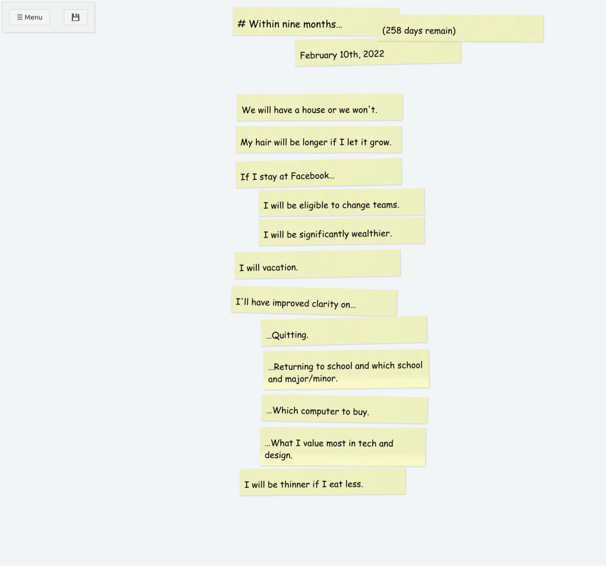
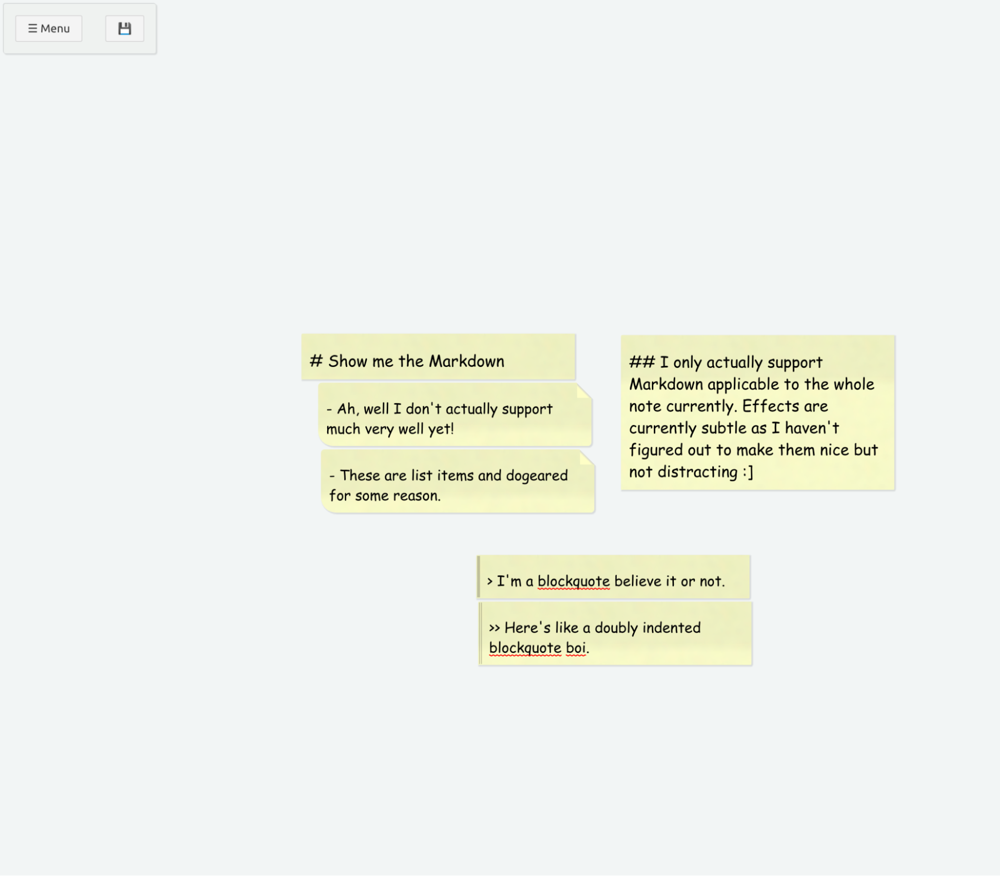
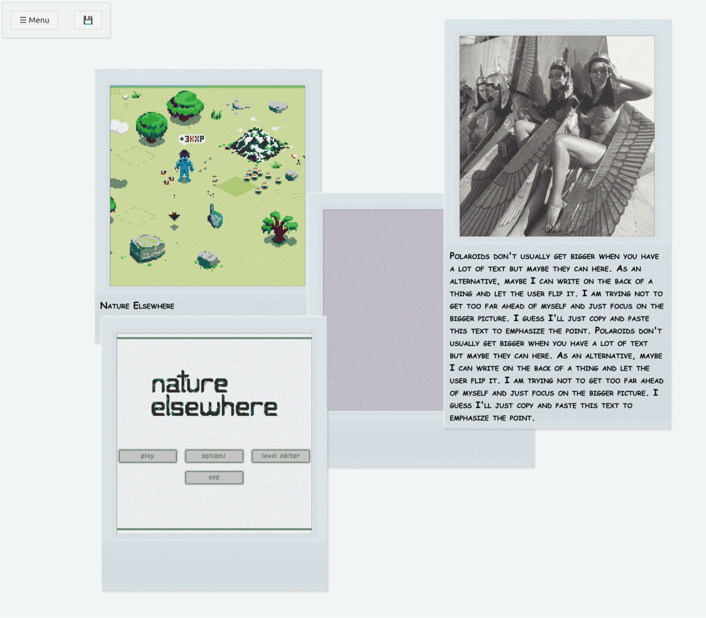

#2021-06-02: Perfect Notes
A prototype of Linear Text.#Background
Notes have always been an important part of my life. I've taken copious notes since I was 12, maybe longer. I think of notes as a kind of second brain or living thing of its own. I lost all my data in a 2011 burglary and it really felt like losing a big piece of my own mind that I haven't gotten over.
As a kid, I used a waterproof notebook and pen. They held up to the rigors of my pocket well. I've made many changes since, have always been dissatisfied, and am always looking for something better.
The latest apps are no different. I am totally enamored with how sexy they are but pretty soon I am totally lost in the UI and my data is trapped in their proprietary formats. I can export Trello to JSON, sure, but how do I make sense of it?
I've been making due with Markdown for years and I like it well enough. I just want something a little more list-centric and with a more pleasing UI that makes me feel good.
I don't have a name for such a thing yet but I've been calling it "Perfect Notes" for the time being.
#What is it?
I am still figuring that out. Here's what I think it is at the moment:
- The text is the UI and the UI is text. The two representations always correspond so use whichever you prefer whenever you prefer.
- The underlying data format is a CSV (actually, I use tab-delimited).
- If your CSV header includes Perfect Notes columns, they will be used. If not, sensible defaults will be used and the original data format won't be changed.
- Each row of the CSV is represented as a fragment in the UI. Fragments supports
a few possible data sources including:
- x and y: position.
- thing: how to visually represent the fragment. Two types are supported currently: photo and note.
- text: if the thing supports a text field, it will be used.
- image: if the thing supports an image, it will be used.
- No newlines :]
I'm still uncovering interesting ways the pieces fit together. I want the UI to correspond to text and vice-versa so, for example, cards that are close together in the UI are grouped in the CSV. Similarly, the markdown feels a lot more natural when the first column is text.
#What will I use it for?
- I want a nice way to keep lists.
- I want to track things that are important to me. For example, my favorite songs or favorite Nintendo games.
- I want to be able to organize my thoughts in a more visual way and be able to switch to plain text seamlessly and losslessly.
- I want my notes to feel real and special like a scrapbook or a personal journal without compromising on plain text or having to carry a physical object.
- I want a nice way to manage personal projects like my game.
#Examples
#9 months

text thing x y z w h rotate background created modified
# Within nine months… note 403 13 287 53 0.19 2021-05-10T16:08:35.641Z 2021-05-11T03:03:59.752Z
February 10th, 2022 note 511 66 287 53 -1.29 2021-05-10T16:08:51.335Z 2021-05-10T23:47:09.138Z
(258 days remain) note 654 26 287 53 0.28 2021-05-11T03:03:08.420Z 2021-05-28T16:05Z
We will have a house or we won't. note 410 163 287 53 -0.18 2021-05-10T16:09:16.235Z 2021-05-11T02:58:04.787Z
My hair will be longer if I let it grow. note 408 219 287 53 -0.08 2021-05-10T16:09:52.626Z 2021-05-11T02:58:07.141Z
If I stay at Facebook… note 408 277 287 53 -1.15 2021-05-10T16:10:17.313Z 2021-05-11T02:58:09.652Z
I will be eligible to change teams. note 448 328 287 53 -0.44 2021-05-10T16:10:36.308Z 2021-05-11T02:58:13.052Z
I will be significantly wealthier. note 448 378 287 53 -0.79 2021-05-10T16:10:51.535Z 2021-05-11T02:58:15.636Z
I will vacation. note 406 435 287 53 -1 2021-05-10T16:11:17.534Z 2021-05-11T02:58:19.012Z
I'll have improved clarity on… note 400 499 287 53 1.48 2021-05-10T16:12:15.943Z 2021-05-11T02:58:20.892Z
…Quitting. note 452 551 287 53 -1.39 2021-05-10T16:17:15.965Z 2021-05-11T03:00:27.991Z
…Returning to school and which school and major/minor. note 456 607 287 74 -0.77 2021-05-11T02:58:41.386Z 2021-05-11T03:00:30.190Z
…Which computer to buy. note 453 686 287 53 1.05 2021-05-11T02:58:55.787Z 2021-05-11T03:00:33.574Z
…What I value most in tech and design. note 450 741 287 74 0.26 2021-05-10T16:18:08.025Z 2021-05-11T03:00:35.158Z
I will be thinner if I eat less. note 415 812 287 53 -0.43 2021-05-10T23:45:19.484Z 2021-05-11T03:00:38.142Z
#Markdown?

text thing x y z w h rotate background created modified
# Show me the Markdown note 517.5 452.5 287 48 2021-06-03T05:15Z 2021-06-03T05:15Z
- Ah, well I don't actually support much very well yet! note 535 504 287 67 2021-06-03T05:15Z 2021-06-03T05:15Z
- These are list items and dogeared for some reason. note 538 574 287 67 2021-06-03T05:16Z 2021-06-03T05:16Z
## I only actually support Markdown applicable to the whole note currently. Effects are currently subtle as I haven't figured out to make them nice but not distracting :] note 853 454 287 163 2021-06-03T05:16Z 2021-06-03T05:17Z
> I'm a blockquote believe it or not. note 701 685 287 46 2021-06-03T05:15Z 2021-06-03T05:15Z
>> Here's like a doubly indented blockquote boi. note 703 734 287 67 2021-06-03T05:15Z 2021-06-03T05:16Z
#Some photos

#Technology
I've been taking a no modesty approach to coding and just pounding out most stuff. The current technology happens to be Svelte and TypeScript. Everything is frontend currently. Trying to decide whether to use Google Drive API for most of the backend or use Electron and stick to native. Firefox support sucks because of lacking File API.
#Summary
It's been fun to think about and to think with. It's one of those bootstrapping tools that you can use to help build itself which I think is extra fun.